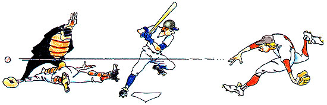

THE LAST LAUGH
WELL SIR, THE PLUMTREE CROSSING Cuspidors took the field the other day to warm up for a summer softball game. Ott Bartlett grabbed the mound. As he pegged a practice pitch to catcher Newt Blanchard, he said, "Remember Smoke Taylor? His pitching arm was so dangerous even the NRA wanted to license it."
Newt caught the horsehide, flipped it back and said, "One batter tried to argue about a sizzling strike Taylor threw. He said, 'Ump, that one sounded high.' "
"Yep," Ott Bartlett agreed, hurling again. "Some rookie once went to the plate against Smoke. There were two outs, so he asked his manager what to look for in that situation. `Something white coming through,' was the reply."
Newt snagged that throw, and returned it with, "They say a batter in an evening game once stepped up to face Smoke and lit a match. `Why'd you do that?' the catcher asked. `Can't you see him good?' `Sure,' the batter answered, `I can see him. I just want to be sure he sees me!' "
Just then, young Billy Parsons stepped up to the plate to take a few swings.
"What about Wagon Tongue Malley?" said Ott, slabbing a slider towards the plate. "He's the only slugger I ever heard of who hit the ball over the Mickey Maris Fried Chicken sign."
"The Mickey Maris Fried Chicken sign?" swung young Billy Parsons, falling for the sucker pitch.
"Yeah," Newt said as the ball met his mitt, "the one that said, `To get a better piece of chicken, you'd have to be a rooster.' "
Ott got the apple back and wound up for a number two. "He gave all his bats names. Lazarus, for instance."
"Lazarus?" said Billy, missing the curveball.
"For when his team needed to rise from the dead," said Newt, returning it.
"Had another bat called Dr. Obie," Ott zipped with a number one.
Billy connected on that one. "It delivered!" His hit rainbowed out to Lafe Higgins in left field. While Lafe was waiting, he said, "What about the outfielder Big House Morton? That guy could sure cover a lot of ground-without moving!"
Lafe caught the ball and lobbed it over to Jervis Jarvis, playing center gardener. Jervis noted, "They say Big House once went into a restaurant and ordered everything on the menu but 'Thank you for dining with us.' " He flipped the ball to his brother Jorvis in right.
"Yep," said Jorvis, skipping the rock back to the pitcher. "His manager once said, `Big House is improving in the outfield. He hasn't caught a ball yet, but he's getting closer to them.' "
Ott sent the seed back across the plate. "Wasn't he the guy who tried to renegotiate his contract, but the team's owner said, `We finished in last place with you, Big House. It's a cinch we can finish last without you.' "
"Sure enough," said Newt, as the ball hit mitt, "the next day his manager pulled him aside and said, 'Nobody knows this, Big House, but one of us has just been traded to Kansas City.' "
"Did he ever do any prison time?" asked Doc Thromberg, stepping up to take a cut or two.
"Nope," said Ott, "you're thinking of Jailbird Conroy. Ol' J.B. once went to give a speech at the local high school and the principal asked him, What'd you take in school, Conroy?' " He twirled a bender by Doc, so Newt answered, "Mostly overcoats."
"What about Slippery Elmer Jones?" Doc offered, getting ready to try again.
"The spitball pitcher?" Ott said, popping the pill. "They kept three stats on him."
"Won, lost and relative humidity!" Doc cracked, hitting a wormburner to first.
Purvis Jacobs leathered it and stepped on the gateway. "An ump once accused Slip of using a foreign substance on the ball. He said, 'No sir, it was manufactured right here in the U.S. of A.' " Purvis snapped the ball to second.
Lem Tucker caught it cleanly. "So the ump searched Slippery. Found a note in his glove. It said, 'You're getting warm.' "
A short flip to August Carmichael at shortstop. "Couldn't field, though," said August. "Didn't he drop a grounder hit back to the mound 'cause he lost it in the sun?"
A. C. underhanded to McCannon at third. "No," Cleedy said. "When they asked why he dropped it, he said, 'Too much spit.' "
Down to Newt at the platter. "Baseball weren't the only ball Slip was keen on," Newt offered. "Studied them crystal ones, too. Said 'I've seen the future. It's a lot like the present. Only longer.' "
Newt flipped the tater up to Lester Hogshead, the ump, and said, "Let's play ball."
And that's the way they warm up on the diamond down in Plumtree County.
Editor's Note: The first reader to write in and correctly identify the real baseball players associated with at least 12 of the jokes and descriptions recounted here will win a free baseball autographed by the starting nine of the Plumtree Crossing Cuspidors. (Need help? Read Daniel Okrent and Steve Wulf's wonderfully entertaining Baseball Anecdotes, Oxford University Press.)
|
 |
|
|